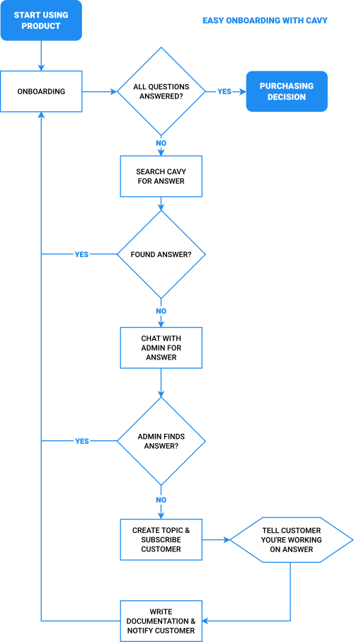

<template>

  <div class="container uses-container">

    <div class="uses-hero product-hero">

      <div class="uses-hero-left">
        <div class="uses-hero-title">
          Support Customer Success
        </div>
        <div class="uses-hero-subtitle">
          Build products customers want by leveraging support
        </div>
        <div class="get-cavy uses-hero-trial">
          <div class="button" click.delegate="claim()">
            Try It Now
          </div>
        </div>
      </div>

      <div class="uses-hero-right">

      </div>

    </div>

    <div class="section">

      <div class="uses-body page-body uses-content">

        

        <div class="blue-gray-heading">Customer Success Needs Exceptional Support</div>

        <p style="margin-top: 20px;">
          Onboarding is the process of familiarizing new customers with using your product, and is an essential part of Customer Success (making sales).

          Automated tools such as wizards, support bots and documentation can assist with this process.

          However, onboarding becomes a manual task when a customer has a question they can&apos;t find an answer for.
        </p>

        <p>
          Customer Success relies on you talking with customers to <strong>understand their needs</strong> and make sure <strong>all of their questions are answered</strong>. If you don&apos;t have an answer when asked, you need to <strong>remember to contact the customer</strong> when you do.
        </p>

        <p>
          Cavy offers a unique solution for this problem by connecting communication with documentation in topics.
        </p>

        <p>
          Every question asked has a topic. Customers can be directed to documentation on the topic if it&apos;s available.

          If it&apos;s not, a new topic can be created while talking with the customer. Documentation can be written on the spot or done later. If it&apos;s done later, a customer can subscribe to the new topic to be notified when the documentation is available. Even better, it can also be used for features requests and tracking bugs.
        </p>

        

        <div class="blue-gray-heading">Leverage Support To Build Your Product</div>

        <p style="margin-top: 20px;">
          Not only is this a great way to build documentation and answer questions, but it&apos;s also a great way to build your product.
        </p>

        <p>
          When a customer asks for a feature that doesn&apos;t exist, you can evaluate what every customer has to say about the feature, and pitch an idea in its documentation. Just create a new topic for the feature, communicate with customers about that feature, ask them to subscribe and keep a running dialogue with everyone through private chat and documentation.
        </p>

        <p>
          Cavy is an agile development tool that can become the gatekeeper between you, your development team and your customers.
        </p>

      </div>

      <div class="uses-container page-body uses-content">

        <div class="call-to-action-container">

          <div class="call-to-action-container-title">
            <div>What are you waiting for?</div>
            <div>Try out Cavy for <strong>free</strong><sup>*</sup> today!</div>
          </div>

          <div class="get-cavy">
            <div class="button" click.delegate="claim()">
              Create Your Cavy
            </div>
          </div>

          <div class="call-to-action-container-requirements"><sup>*</sup> Requires a valid credit card or authorized payment provider.</div>

        </div>

      </div>

    </div>

  </div>

</template>
